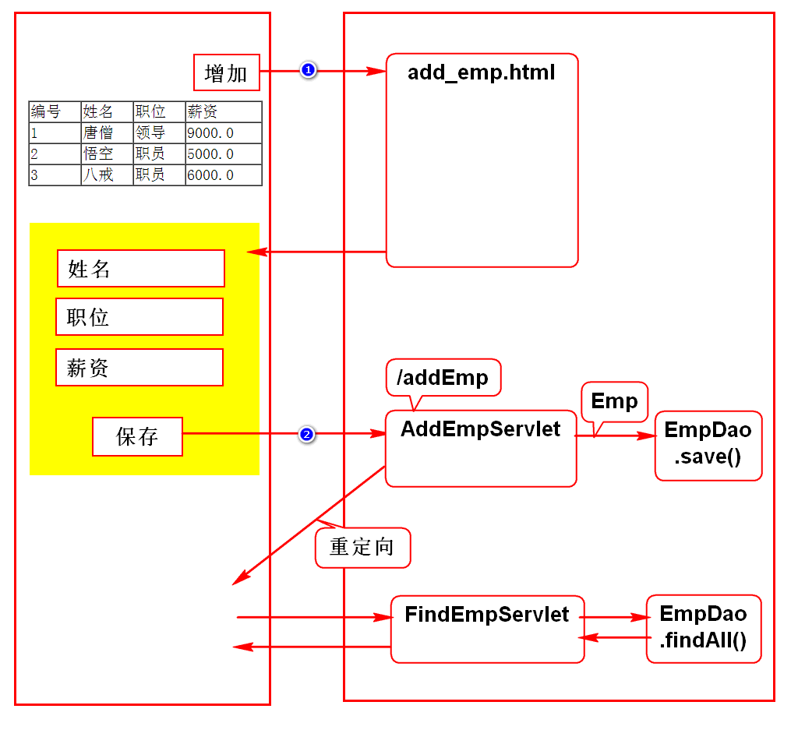
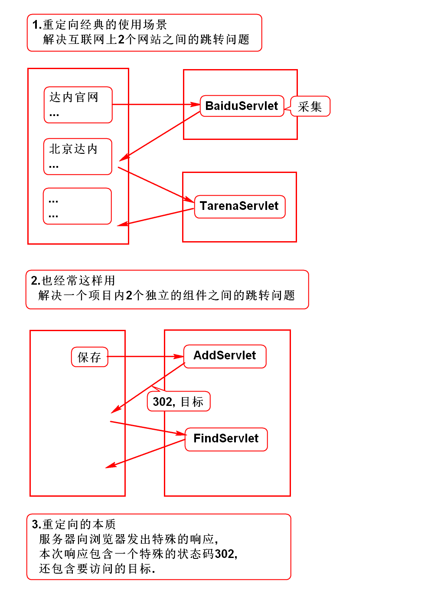
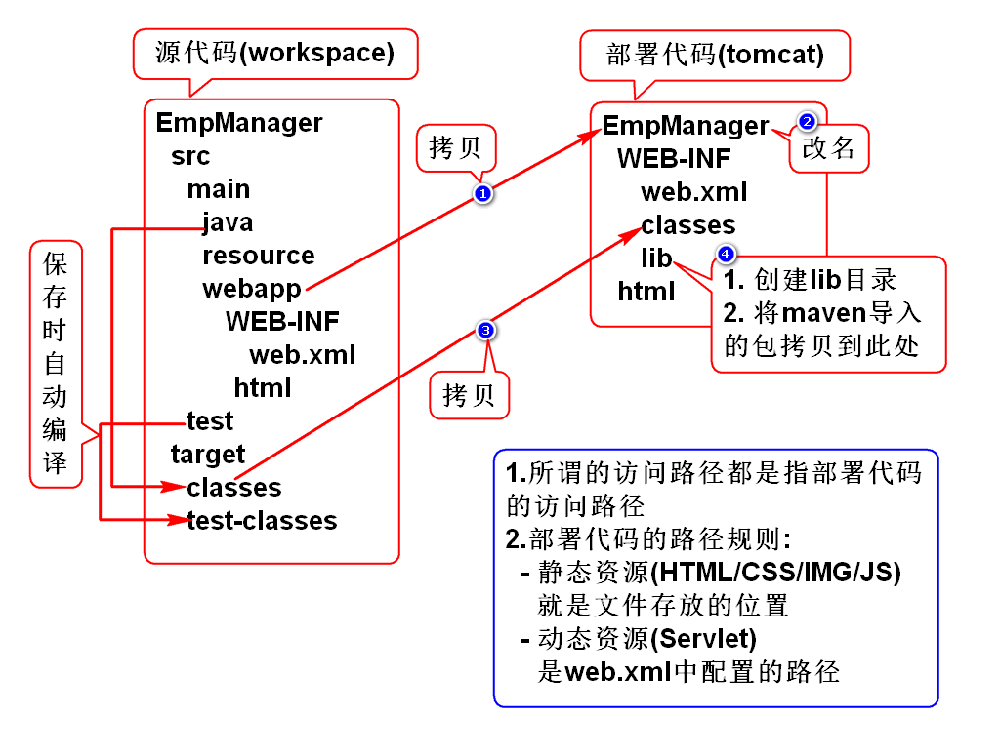
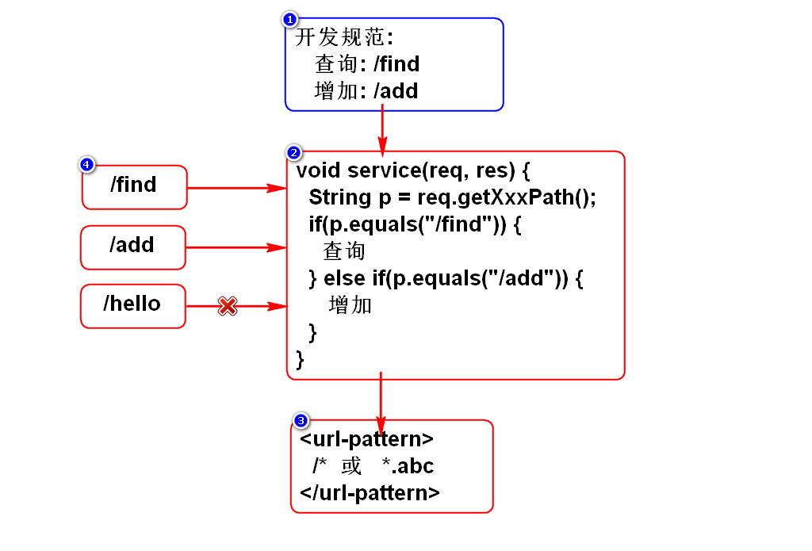
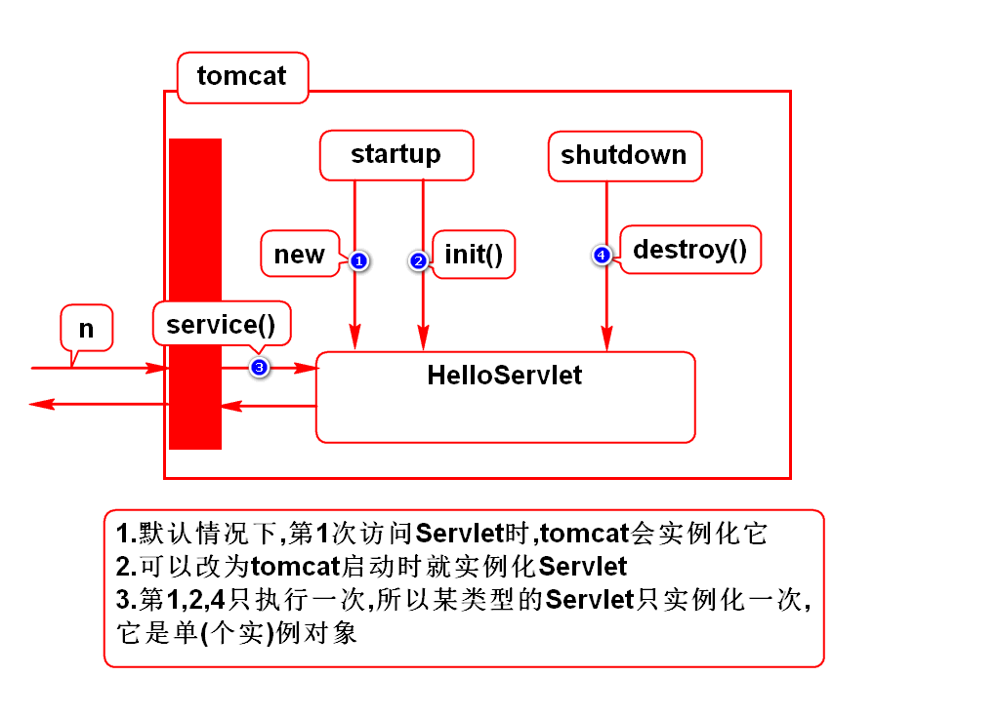
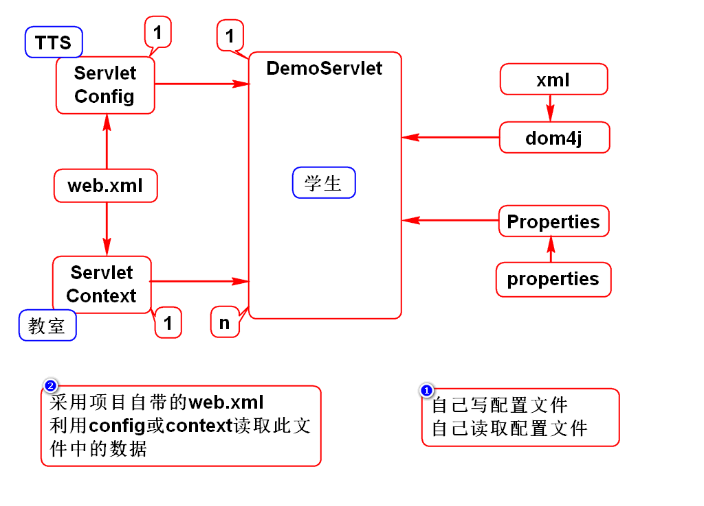

一.增加员工

二.重定向

三.访问路径
1.项目部署的过程

2.如何获取访问路径
项目名: getContextPath()
Servlet访问路径: getServletPath()
URI: getRequestURI()
URL: getRequestURL()
3.URI和URL的区别
1)狭义的理解(Java WEB 项目)
URI: 绝对路径
URL: 完整路径
2)广义的理解(任意 WEB 项目) *
URI: 资源的名字
URL: 资源的真名
URI包含URL
4.如何配置Servlet访问路径?
1)精确匹配
/hello
必须通过"/hello"才能访问此Servlet
此Servlet只能处理"/hello"这一个请求
2)通配符
/*
通过任何路径都能访问此Servlet
此Servlet能处理一切请求
3)后缀
*.abc
以".abc"为后缀的请求都能访问此Servlet
此Servlet能够处理多个请求
5.如何使用一个Servlet处理多个请求?

四.Servlet生命周期

五.ServletConfig和ServletContext
1.它们的作用
都能够读取web.xml中为Servlet预置的参数 
2.它们的区别
config和Servlet是1对1的关系
context和Servlet是1对多的关系
若数据只给某个Servlet使用,则用config
若数据给多个Servlet使用,则用context
它们的关系由服务器来保障
3.config使用场景
假设要开发一个网页游戏,若超过人数上限则要排队
开发登录功能LoginServlet
人数上限应该是一个可配置的参数maxOnline
该参数由LoginServlet使用
由于该参数只是LoginServlet使用,由config读取即可